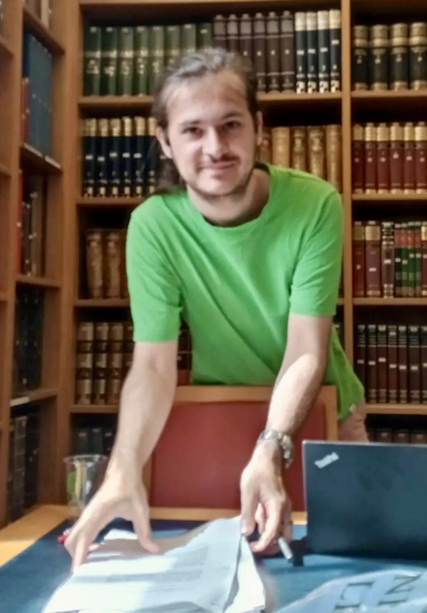

Pierre-Louis Guillot
PhD student at the University of Sheffield
Email : guillot [dot] pl [at] gmail [dot] com
I started my PhD in October 2024 under the supervision of Neil Strickland. I am interested in stable homotopy theory and chromatic homotopy theory.
Events I attended or will attend
European Talbot 2025 "Higher algebra and chromatic homotopy theory" (Kolding, 31/06/2025 - 04/07/2025)
New horizon in equivariant homotopy theory workshop (Cambridge, 12/05/2025 - 23/05/2025)
Some documents
My master's thesis "Exploring simplicial constructions for
un-delooped K-Theory" (Report and Presentation)